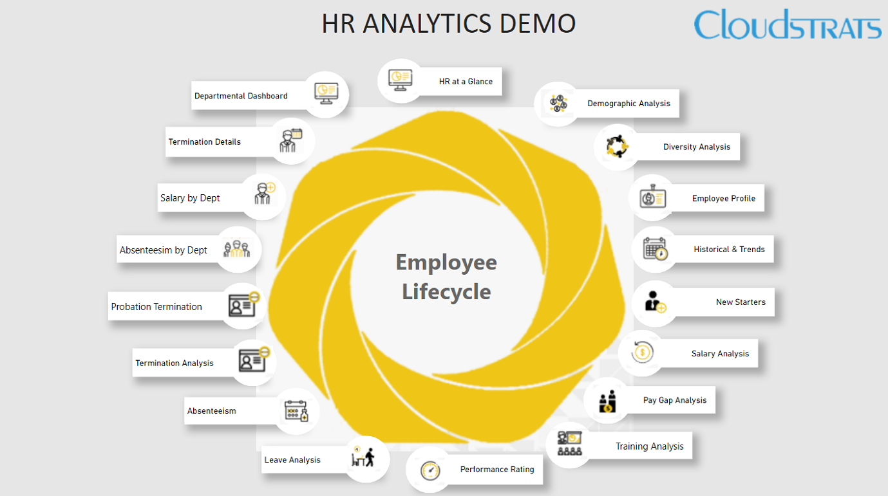
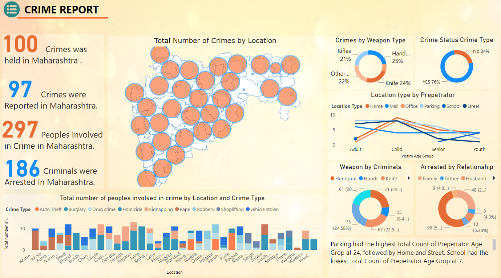
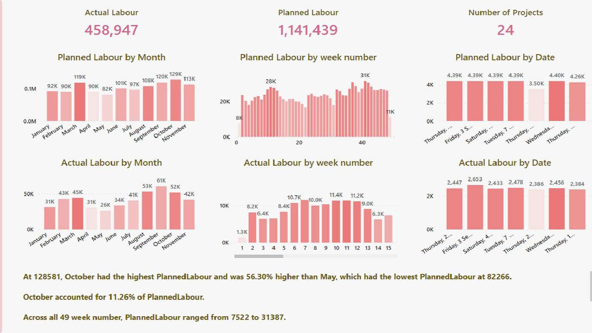

HR Analysis
HRM Dashboard (also known as people analytics) is the collection and application of talent data to improve critical talent and business outcomes. HR analytics leaders enable HR leaders to develop data-driven insights to inform talent decisions, improve workforce processes and promote positive employee experience. Common data sources include internal data like demographic employee data, payroll data, social network data, performance data, and engagement data. External data sources can include labour market data, population data, LinkedIn data, and much more. Any data that's relevant for the specific project can be used.
Bank Executive
Banks use Executive Financial Dashboards to give their leaders an easy way to monitor top level financial KPIs and to do comparisons across their business units. When used as part of good business practices in Executive and Financial Planning & Analysis (FP&A) departments, a company can improve its strategies and resulting financial results, and it can reduce the chances that senior leaders have to delay decision-processes due to lack of clear, real time metrics.

Crime Report
Crime Dashboard offers information about relevant crime data and serves to improve information-sharing and transparency. This dashboard includes crime data, comprising crime statistics, arrested criminals, criminal complaints, solved cases, etc. which aids quick comprehension of the underlying data.
View state and agency-level data for specific crimes, including year-over-year or multi-year comparisons
Generate trend analysis by type of offense
Compare data and key performance indicators (KPIs) across agencies
Criminal incidents
Wellbeing checks
Disturbances
Safety escorts
Lost and/or stolen property
Lockouts
Suspicious activity
Alarms
Trespassing

Real Estate
The incorporation of modern technologies like data intelligence dashboard has been revolutionising the real estate market, driving it into the current phase. Multiple organisations have already shifted to big data to analyse and estimate property purchases, manage portfolios, calculate profits, etc., indicating the prospects of data intelligence in the real estate industry to be extensive and boundless.